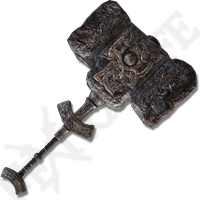
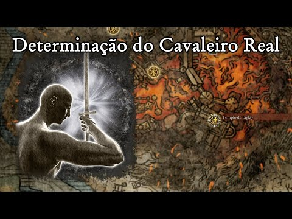

Elden Ring o grande jogo da Fromsoftware
Aqui você encontra dicas, localizações de equipamentos e chefes para enfrentar
Todos os Chefes
Armas
Talismans
Armaduras
Dicas Consorte Radahn
Melhor Build
Feche o olho, use a cinza de guerra e bonk

